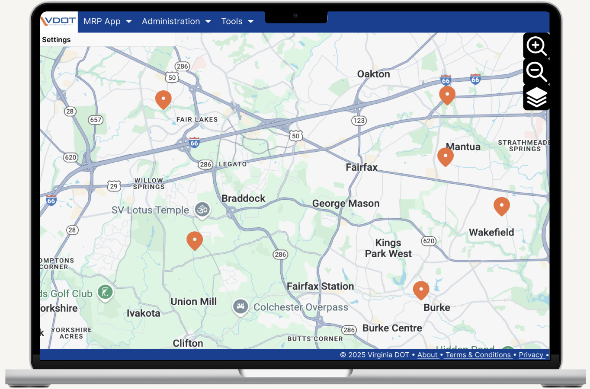
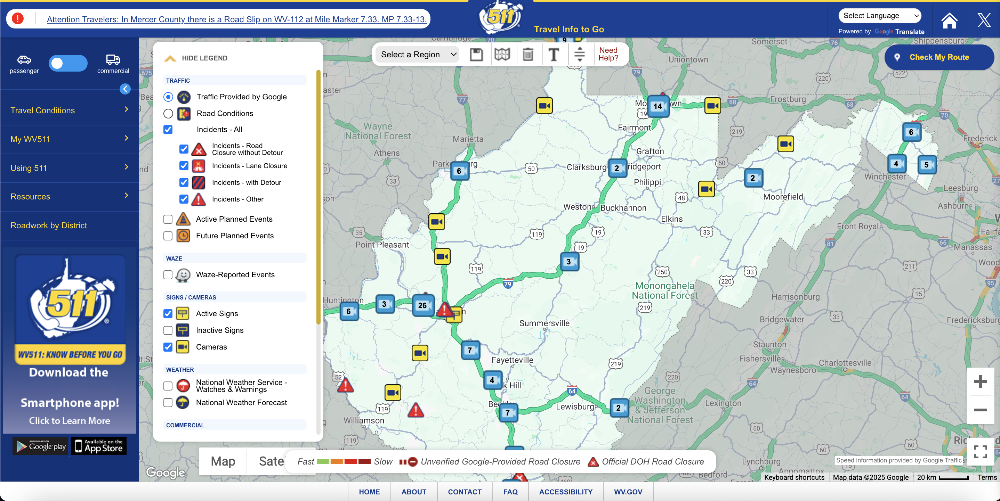
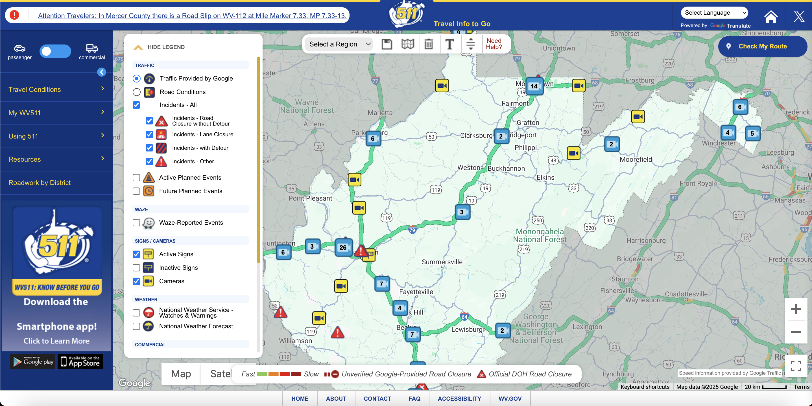

The Virginia Department of Transportation (VDOT) is responsible for building, maintaining, and operating the third-largest state-maintained highway system in the country. The Maintenance Rating Program (MRP) Dashboard is a centralized platform designed to streamline maintenance operations, improve decision-making, and enhance the efficiency of VDOT's maintenance teams.
Competitive Analysis
A competitive analysis was conducted to compare the VDOT MRP Dashboard with similar platforms, including:
-
511 Virginia:
- Provides real-time traffic and road condition updates.
- Focuses on public-facing information rather than internal maintenance tasks.
- Lacks advanced resource allocation and task tracking features.
-
WV 511:
- Offers traffic cameras, road conditions, and weather updates.
- Primarily designed for public use, not internal maintenance operations.
- Does not include task management or resource tracking tools.
-
511 NY:
- Provides comprehensive traffic and transit information.
- Focuses on public transportation and road conditions.
- Lacks features for internal maintenance task management and resource allocation.
The VDOT MRP Dashboard stands out by offering a centralized platform for internal maintenance teams, with features like task tracking, resource allocation, and real-time updates, which are not available in the public-facing 511 systems.
 
